HƯỚNG DẪN CHI TIẾT THANH LÝ SXXK
(Chức năng chạy thanh lý đối với doanh nghiệp không có định mức sản phẩm theo giai đoạn)
Quy trình thanh lý tờ khai trên ECUS5_VNACCS bao gồm 5 bước:
- Bước 1: Nhập kiểm hóa tờ khai.
- Bước 2: Tạo lần thanh lý và nhập bảng kê.
- Bước 3: Chạy lần thanh lý.
- Bước 4: In báo cáo thanh lý.
- Bước 5: Đóng hồ sơ thanh lý.
Hướng dẫn chi tiết:
- Bước 1: Nhập kiểm hóa tờ khai:
- Bước 2: Tạo lần thanh lý và nhập các bảng kê.
- Bước 3: Chạy thanh lý
- Bước 4: In báo cáo thanh lý.
- Bước 5: Đóng hồ sơ thanh lý.
Nhập kiểm hóa tờ khai là bước thao tác bắt buộc để kiểm soát lại số liệu tờ khai trước khi đưa vào thanh lý. Để kiểm hóa tờ khai, bạn làm theo 1 trong 2 cách sau:
Cách 1: Kiểm hóa từng tờ khai.
Để kiểm hóa tờ khai, bạn mở tờ khai cần kiểm hóa vào tab “Kết quả xử lý tờ khai” chọn nút chức năng “Kiểm hóa tờ khai”:
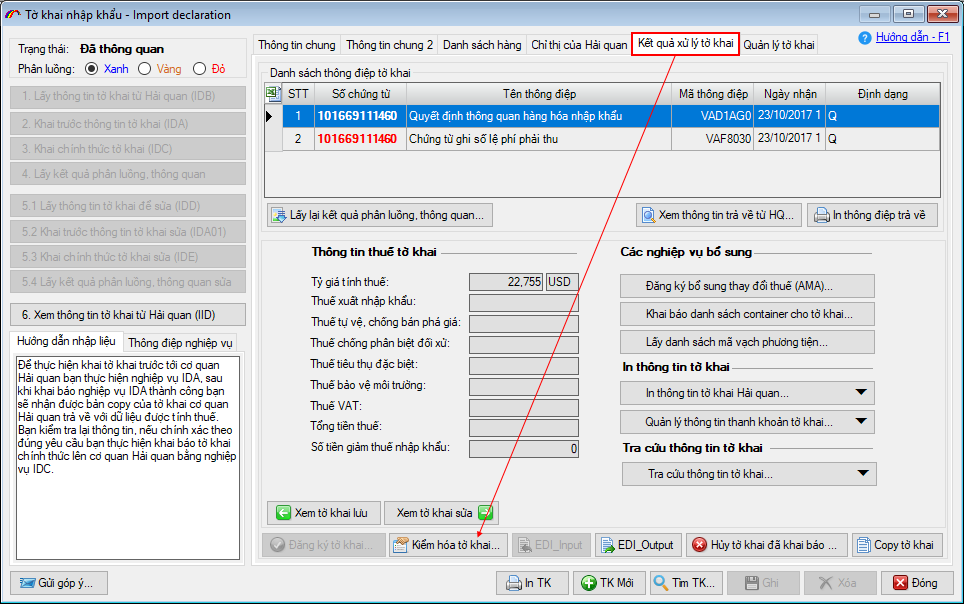
Hoặc bạn có thể vào menu “Tờ khai hải quan / Kiểm hóa tờ khai” chọn kiểm hóa tờ khai nhập hoặc tờ khai xuất tương ứng:
Tiến hành “Chọn tờ khai” cần kiểm hóa:
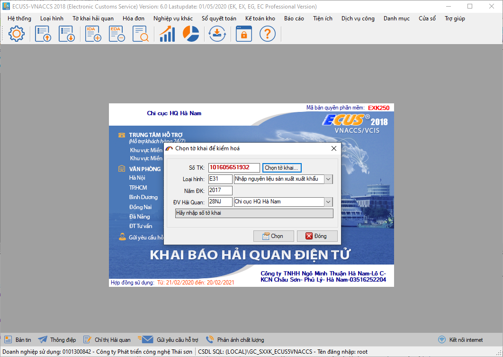
Trên form giao diện kiểm hóa, bạn nhập các thông tin “Ngày thực N/X”, và kiểm tra các thông tin hàng hóa của tờ khai
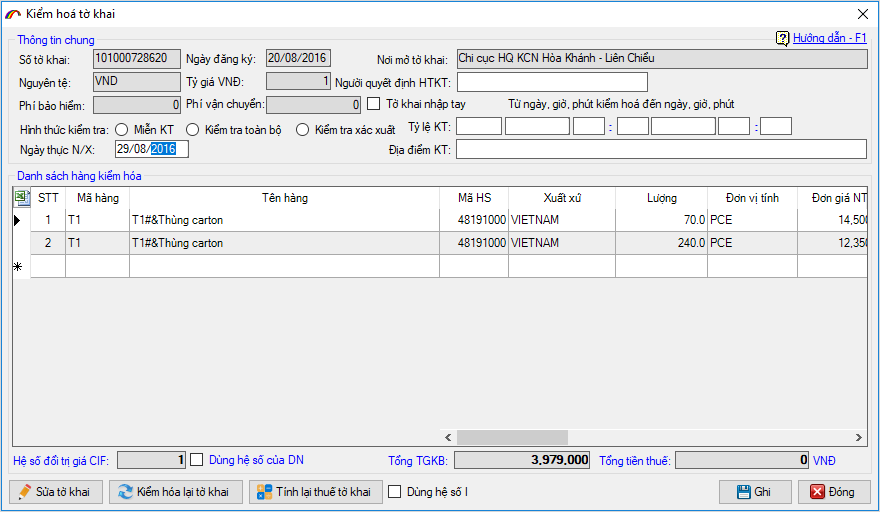
Bấm “Ghi” để hoàn thành kiểm hóa:
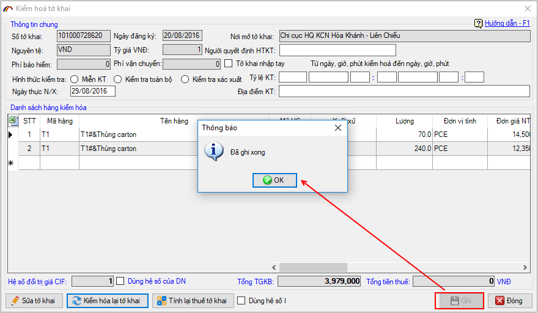
Cách 2: Nhập kiểm hóa nhiều tờ khai.
Nếu bạn có nhiều tờ khai cần kiểm hóa, thay vì việc kiểm hóa từng tờ khai sẽ mất thời gian, phần mềm hỗ trợ nhập kiểm hóa nhiều tờ khai từ file excel. Bạn tạo 1 file excel danh sách các tờ cần kiểm hóa theo mẫu như sau:
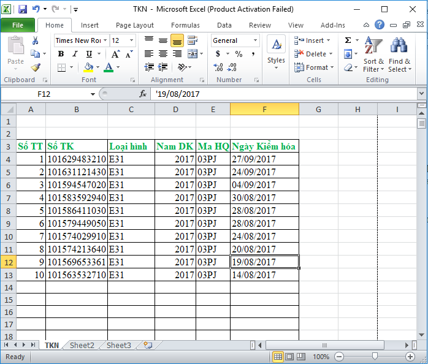
Lưu ý, bạn có thể tạo chung danh sách tờ khai nhập và tờ khai xuất và cùng 1 sheet, nhưng để thuận tiện trong quá trình làm việc cũng như quản lý số liệu, bạn nên làm danh sách tờ khai nhập, tờ khai xuất ra 2 sheet khác nhau.
Sau khi xây dựng xong file excel có chứa danh sách tờ khai cần kiểm hóa, bạn vào menu “Tờ khai hải quan / Kiểm hóa tờ khai” chọn chức năng “Nhập kiểm hóa từ file excel”
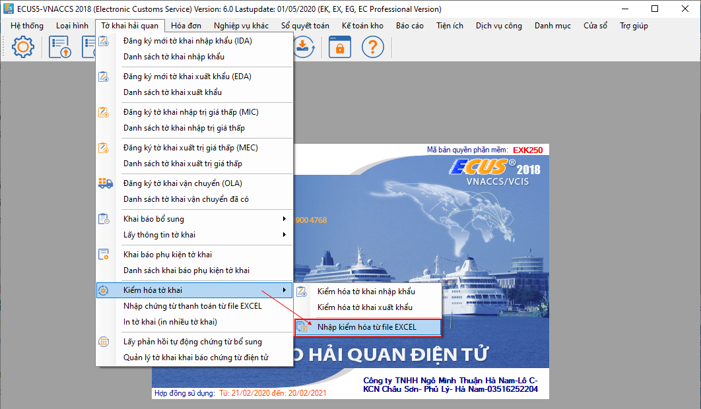
Trên form giao diện chức năng nhập kiểm hóa từ file excel, bạn chọn file excel chứa danh sách tờ khai cần kiểm hóa, và thiết lập thông số các dòng, cột dữ liệu như trên file excel:
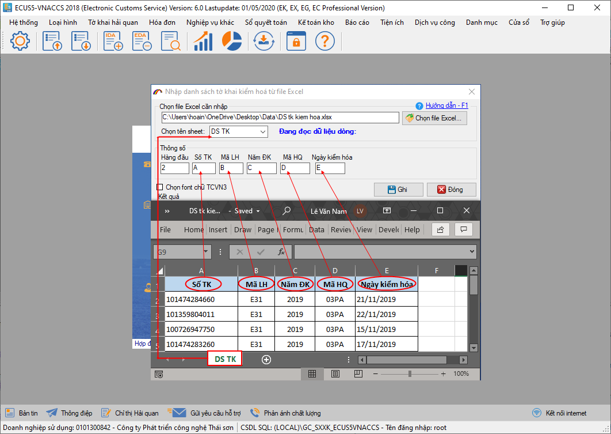
Sau khi thiết lập các thông số thành công, bạn bấm “Ghi” để phần mềm tiến hành kiểm hóa:
Phần mềm sẽ tiến hành kiểm hóa các tờ khai có trong file excel dựa trên thông số bạn đã thiết lập, sau khi kiểm hóa xong phần mềm sẽ có thông báo đến người dùng và số lượng tờ khai đã kiểm hóa thành công:
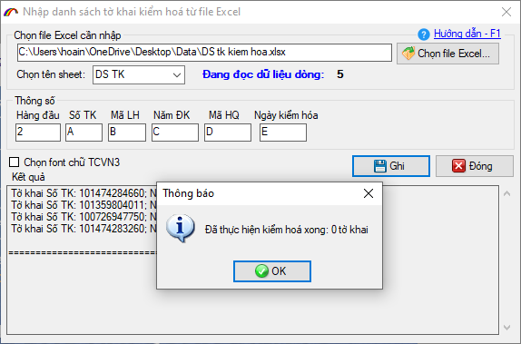
Sau khi đã kiểm hóa xong danh sách tờ khai nhập, tờ khai xuất cần thanh lý. Bạn tạo lần thanh lý mới trên phần mềm bằng cách vào menu “Loại hình / Thanh lý sản xuất xuất khẩu” chọn chức năng “Tạo hồ sơ thanh lý V5”:
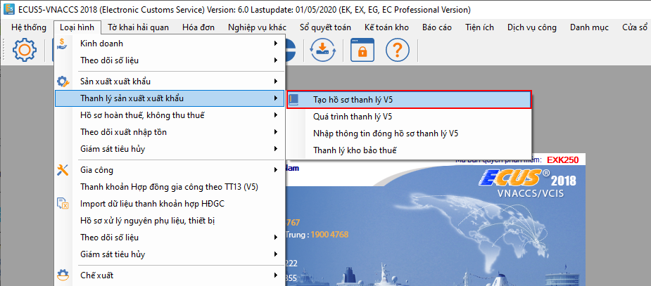
Trên form giao diện hồ sơ thanh lý, bạn nhập “Ngày bắt đầu TL” và bấm “Ghi thông tin hồ sơ thanh lý” để tạo hồ sơ thanh lý:
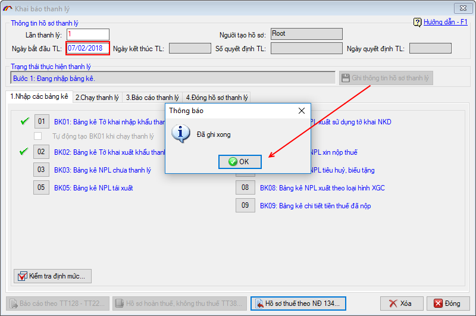
Sau khi tạo hồ sơ thanh lý thành công, các bảng kê tờ khai sẽ hiện ra để bạn nhập liệu. Bạn tiến hành nhập các bảng kê tờ khai.
Chú ý: Trong 1 hồ sơ thanh lý, hiện nay có 9 bảng kê tờ khai, trong đó BK01 và BK02 là 2 bảng kê cơ sở và bắt buộc phải có, các bảng kê còn lại từ BK03 đến BK09 là để kê khai chi tiết các tính huống nghiệp vụ phát sinh như: NPL huỷ, biếu tặng, NPL tái xuất, NPL chưa thanh lý, NPL đã nộp thuế … Trường hợp không phát sinh thì các bảng kê này không cần nhập liệu.
Chú ý: Trong 1 hồ sơ thanh lý, hiện nay có 9 bảng kê tờ khai, trong đó BK01 và BK02 là 2 bảng kê cơ sở và bắt buộc phải có, các bảng kê còn lại từ BK03 đến BK09 là để kê khai chi tiết các tính huống nghiệp vụ phát sinh như: NPL huỷ, biếu tặng, NPL tái xuất, NPL chưa thanh lý, NPL đã nộp thuế … Trường hợp không phát sinh thì các bảng kê này không cần nhập liệu.
Nhập BK01: Bảng kê tờ khai nhập thanh lý
Bạn kích chuột vào nút để cửa sổ BK01 hiện ra như sau:
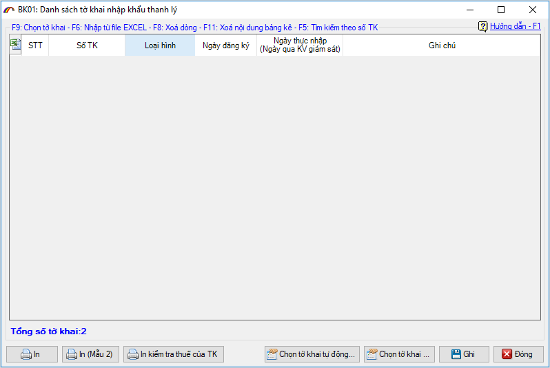
Để thêm tờ khai vào bảng kê bạn chọn nút  :
:
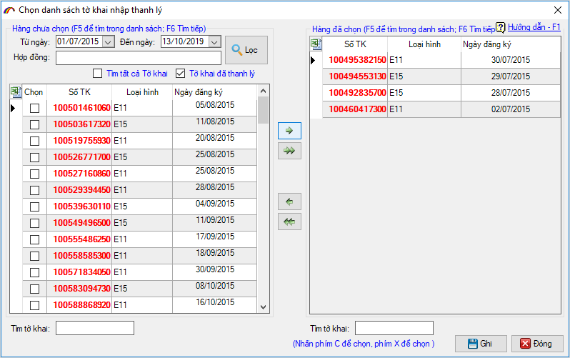
Để chọn tờ khai nhập đưa vào thanh lý bạn kích chọn tờ khai đó bên danh sách Tờ khai chưa chọn và kích nút (hoặc ấn phím C), ngược lại nếu muốn xoá một tờ khai ra khỏi danh sách tờ khai đã chọn bạn kích chuột vào tờ khai đó trên danh sách Tờ khai đã chọn và ấn nút  ( hoặc ấn phím X) (nút
( hoặc ấn phím X) (nút  và
và  là cho tất cả các tờ khai trên danh sách)
là cho tất cả các tờ khai trên danh sách)
Sau khi chọn xong danh sách tờ khai nhập bạn chọn nút
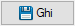
để quay lại cửa sổ BK01 với danh sách tờ khai đã chọn và kích nút :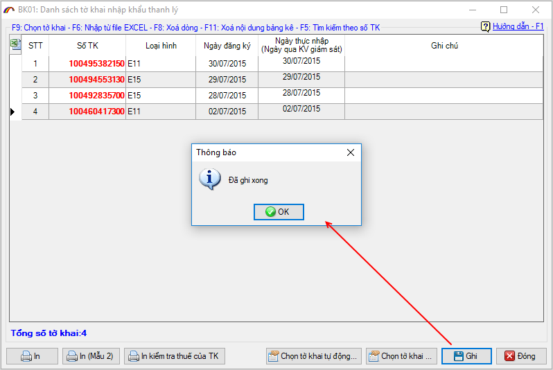
Lưu ý: nếu khi bạn bấm “Chọn tờ khai” mà danh sách tờ khai không hiện ra, thì bạn chú ý nhập lại điều kiện lọc:
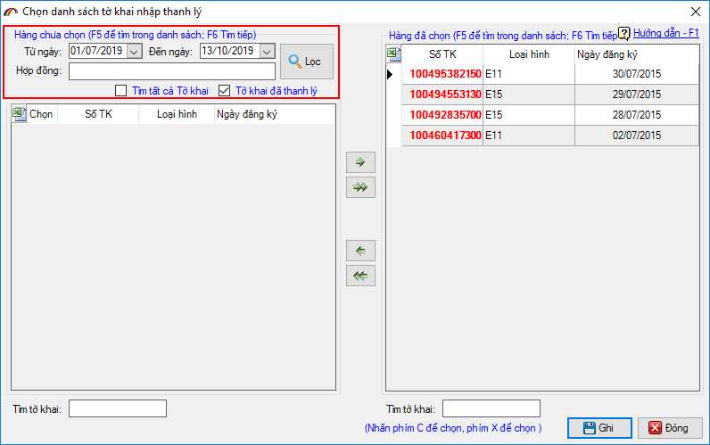
Nhập BK02: Bảng kê tờ khai xuất thanh lý
Bạn kích chuột vào nút
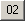
để cửa sổ BK02 hiện ra như sau: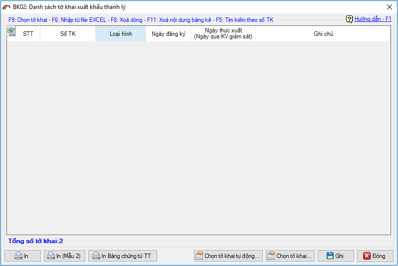
Để tờ khai vào bảng kê bạn chọn nút :
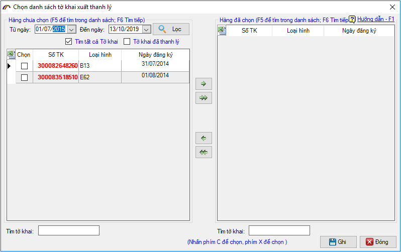
Để chọn tờ khai xuất đưa vào thanh lý bạn kích chọn tờ khai đó bên danh sách Tờ khai chưa chọn và kích nút  (hoặc ấn phím C), ngược lại nếu muốn xoá một tờ khai ra khỏi danh sách tờ khai đã chọn bạn kích chuột vào tờ khai đó trên danh sách Tờ khai đã chọn và ấn nút
(hoặc ấn phím C), ngược lại nếu muốn xoá một tờ khai ra khỏi danh sách tờ khai đã chọn bạn kích chuột vào tờ khai đó trên danh sách Tờ khai đã chọn và ấn nút
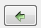
( hoặc ấn phím X) (nút và là cho tất cả các tờ khai trên danh sách)Sau khi chọn xong danh sách tờ khai xuất bạn chọn nút để quay lại cửa sổ BK02 với danh sách tờ khai đã chọn và kích nút :
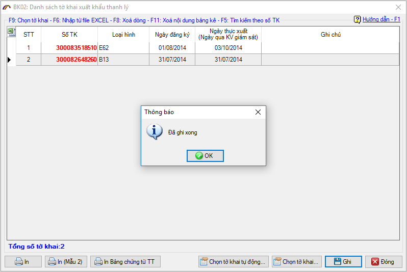
Ngoài ra còn một số các bảng kê khác, cách thức nhập liệu cũng tương tự như các bảng kê đã được hướng dẫn như trên.
Sau khi nhập liệu đầy đủ các bảng kê, bạn sang tab “2.Chạy thanh lý” để tiến hành chạy hồ sơ thanh lý:
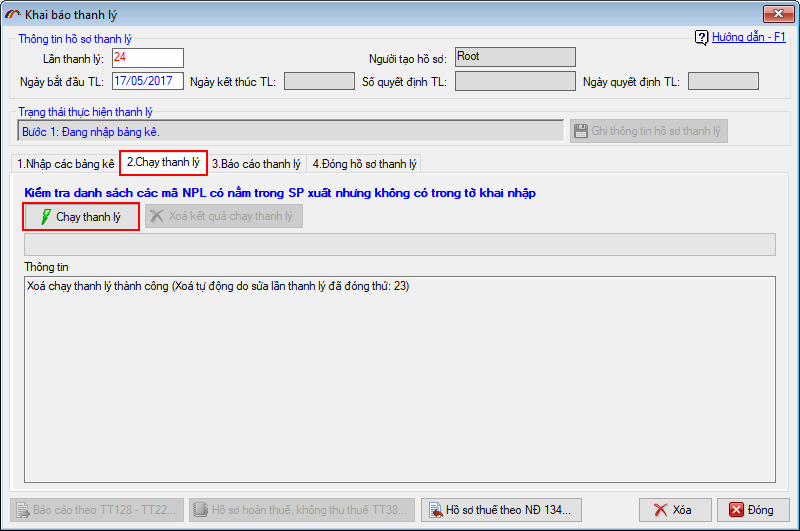
Phần mềm sẽ check một số thông tin và đưa ra cảnh báo cho bạn, bạn có thể kiểm tra lại hoặc bỏ qua để tiếp tục chạy thanh lý:
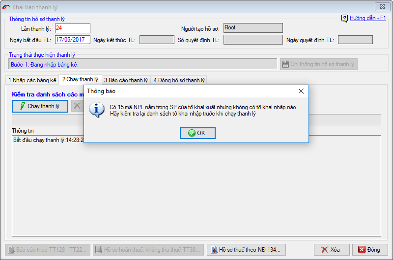
Ví dụ như trường hợp trên, là phần mềm xác định sản phẩm trong tờ khai xuất được cấu thành bởi những nguyên vật liệu mà không nằm trong tờ khai nhập nào được đưa vào lần thanh lý này, và đưa ra danh sách nguyên vật liệu để bạn kiểm tra lại thông tin:
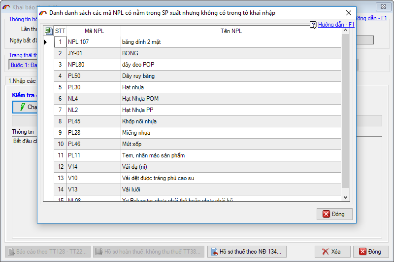
Bạn có thể bỏ qua thông báo và tiếp tục chạy thanh lý:
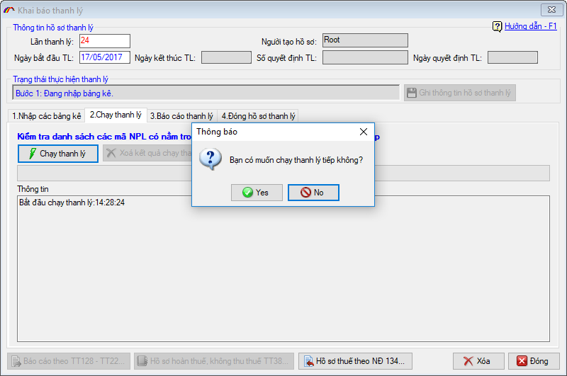
Thời gian để phần mềm chạy xong một lần thanh lý nhanh hay chậm phụ thuộc vào độ lớn của dữ liệu. Màn hình khi chạy thanh lý thành công:
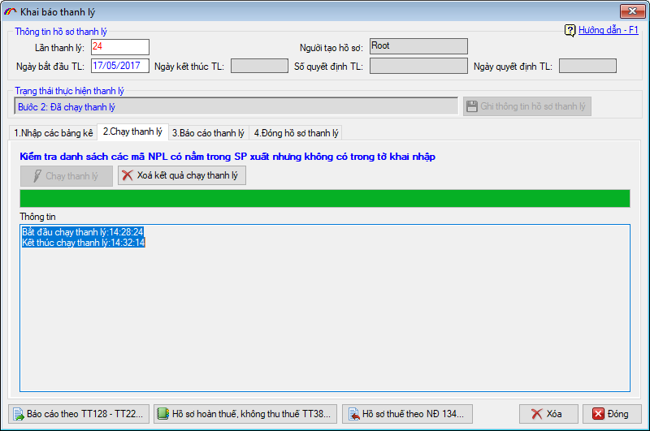
Sau khi chạy thanh lý xong, bạn in báo cáo thanh lý để kiểm tra số liệu. Hiện nay, phần mềm đã nâng cấp và cung cấp cho Doanh nghiệp các mẫu báo cáo mới nhất theo quy định. Ngoài ra còn một số các mẫu báo cáo nội bộ, hoặc báo cáo theo các quy định cũ vẫn được giữ lại để phục vụ cho công tác quản lý nội bộ của Doanh nghiệp.
Một số mẫu báo cáo thường dùng: BC57, BC58 theo TT128-TT22, Hồ sơ hoàn thuế không thu TT38, Hồ sơ thuế theo NĐ 134. Để in báo cáo , bạn chọn các mẫu tương ứng:
Một số mẫu báo cáo thường dùng: BC57, BC58 theo TT128-TT22, Hồ sơ hoàn thuế không thu TT38, Hồ sơ thuế theo NĐ 134. Để in báo cáo , bạn chọn các mẫu tương ứng:
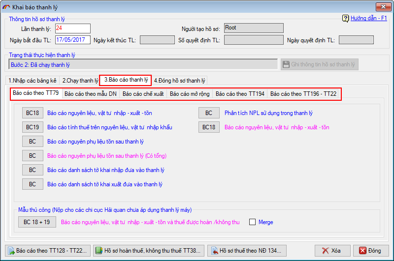
Sau khi hoàn thành lần thanh lý đầu tiên, bạn cần thực hiện đóng lần thanh lý để tránh việc người khác vào thao tác ảnh hưởng đến số liệu đã thanh lý, hoặc để chốt số liệu tồn tại 1 giai đoạn và chuyển sang lần thanh lý thuộc giai đoạn tiếp theo. Để đóng hồ sơ thanh lý bạn vào menu “Đóng hồ sơ thanh lý”:
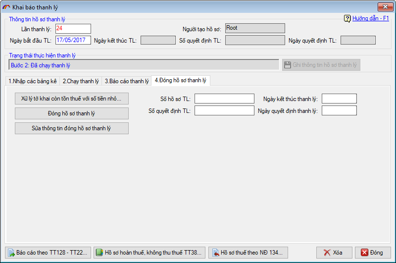
Tại đây, bạn nhập số hồ sơ TL, Số quyết định TL và ngày tháng kết thúc thanh lý, Ngày quyết định thanh lý. Hiện nay, việc chạy thanh lý chỉ để áp dụng quản lý nội bộ tại doanh nghiệp không thực hiện việc khai báo lên cơ quan Hải quan, nên việc nhập liệu các chỉ tiêu này, bạn nhập theo số quản lý nội bộ tại Doanh nghiệp của bạn. Sau khi nhập liệu xong, bạn bấm vào “Đóng hồ sơ thanh lý” để hoàn tất:
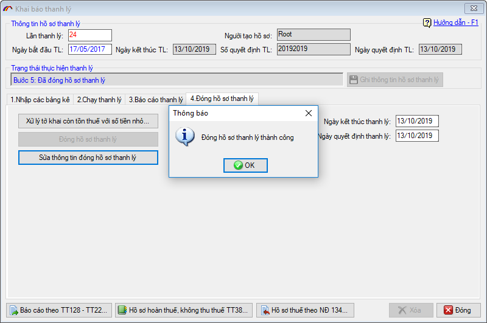
Sau khi đóng hồ sơ thanh lý trước, bạn có thể tạo những hồ sơ thanh lý tiếp theo, quy trình thực hiện tương tự như hướng dẫn trên.
Chú ý: Hiện nay việc chạy thanh lý không khai báo lên cơ quan Hải quan qua hệ thống điện tử. Trường hợp có hồ sơ hoàn thuế hoặc không thu thuế, bạn làm công văn và nộp trực tiếp tại chi cục.
Bản quyền © thuộc về Công ty TNHH Phát triển công nghệ Thái Sơn